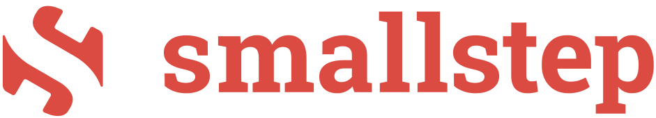

site on
HTTPS
By default, Caddy automatically obtains and renews TLS certificates for all your sites.
HTTPS/TLS for custom domains
The secret sauce of almost every white-label SaaS is Caddy's original On-Demand TLS feature. Grow your SaaS business by orders of magnitude with ease!
Dynamically provision certificates
With On-Demand TLS, only Caddy obtains, renews, and maintains certificates on-the-fly during TLS handshakes. Perfect for customer-owned domains.
Massively scale your TLS
Other web servers and scripted certificate tools fall over with hundreds of thousands of sites or thousands of instances. Caddy is designed to manage certificates reliably at this scale.
sponsored by users like you
Caddy is free software and relies on sponsorships to survive. Not just donations: sponsorships ensure ongoing development and provide your business with tangible benefits.
See sponsorshipsThe most advanced HTTPS server in the world
All you need for TLS and PKI 🔐
Caddy securely serves all sites with TLS by default. It can also manage your internal PKI for you across a fleet of servers and clients.
On-line config API ⚡️
Caddy's native configuration is a JSON document that you can export and manipulate with a RESTful config API.
PCI, HIPAA, and NIST compliant ✅
Caddy's TLS defaults are secure and pass PCI, HIPAA, and NIST compliance requirements. Yes, defaults: no hassle required.
HTTPS for localhost 🏠
We mean it when we say Caddy serves every site on HTTPS. Even localhost and internal IPs are served with TLS using the intermediate of a fully-automated, self-managed CA that is automatically installed into most local trust stores.
Cluster coordination 🌐
Simply configure multiple Caddy instances with the same storage, and they will automatically coordinate certificate management as a fleet and share resources such as keys and OCSP staples!
Fewer moving parts ⚙️
Simplify your infrastructure! Caddy saves money, increases developer productivity, and reduces problems in production.
Experience it
Discover Caddy's automagic HTTPS features with our hosted demo.
Point DNS records for any subdomain named
caddydemo to either:
CNAME
demo.caddyserver.com
or:
A
138.68.4.62
AAAA
2604:a880:2:d0::9dd:9001
Then visit it in your browser.
You'll notice how Caddy provisions a certificate for your domain automatically.
Not working? Make sure to use a direct subdomain of a registered domain, not a "sub-subdomain." Verify you have created the public DNS records shown above with the correct values. You may have to allow time for propagation. Consult your DNS provider's documentation or support for assistance. Your browser/client must set the TLS ServerName indication (most do).
Example subdomains that could work:
caddydemo.example.net,
caddydemo.example.com.au
Caddy is capable of serving TLS for any domains and IPs. This demo is intentionally restricted.
Deploy your own PKI with Caddy
Not only is Caddy the industry leader in certificate automation, it also sports a fully-featured PKI suite for your own fully-automated internal PKI and private CAs.
Powered by open source Smallstep libraries, Caddy becomes a self-managing certificate authority.
localhost {
respond "Hello from HTTPS!"
}
192.168.1.10 {
respond "Also HTTPS!"
}
http://localhost {
respond "Plain HTTP"
}
Internal and localhost certificates
If you configure sites with local or internal addresses, Caddy will serve them over HTTPS using a locally-trusted certificate authority with short-lived, auto-renewing certificates. It even offers to install your unique root into your local trust stores for you.
Make and use your own CAs
Caddy lets you define as many CAs as you need. Root and intermediate keys are generated automatically, and intermediates are renewed before they expire.
Deploy an instance to act as an ACME server. Then other Caddy instances can use it for their certificates.
{
pki {
ca corporate {
name "Our Corporation Authority"
}
}
}
internal.example.com {
# ACME endpoint: /acme/corporate/directory
acme_server {
ca corporate
}
}
{
"apps": {
"tls": {
"certificates": {
"automate": [
"example.com",
"sub.example.com",
"example.net"
]
}
}
}
}
Keep certificates renewed
Caddy is more than just a web server. For example, this config is all it takes to obtain and renew certificates for a set of domain names.
Additional config can be written to wire up certificate maintenance events, which can then be used to integrate with external scripts and tooling.
Recommended by experts
Academic and industry experts recommend Caddy, which has been cited in peer-reviewed journals for its security defaults, best practices, and its uniquely advanced feature set.
"Servers running Caddy exhibit nearly ubiquitous HTTPS deployment and use modern TLS configurations. ... We hope to see other popular server software follow Caddy's lead."
—Josh Aas, Richard Barnes, Benton Case, Zakir Durumeric, Peter Eckersley, Alan Flores-López, J. Alex Halderman, Jacob Hoffman-Andrews, James Kasten, Eric Rescorla, Seth Schoen, and Brad Warren. 2019. Let's Encrypt: An Automated Certificate Authority to Encrypt the Entire Web. In Proceedings of the 2019 ACM SIGSAC Conference on Computer and Communications Security (CCS '19). Association for Computing Machinery, New York, NY, USA, 2473–2487. https://doi.org/10.1145/3319535.3363192
"TLS must be enabled by default ... and the Caddy web server is a good and usable example."
—Katharina Krombholz, Wilfried Mayer, Martin Schmiedecker, and Edgar Weippl. 2017. "I Have No Idea What I'm Doing" - On the Usability of Deploying HTTPS. In 26th USENIX Security Symposium (USENIX Security 17), USENIX Association, Vancouver, BC, 1339-1356. Retrieved from https://www.usenix.org/conference/usenixsecurity17/technical-sessions/presentation/krombholz
"No popular server software does [session ticket key rotation], with the exception of Caddy."
—Drew Springall, Zakir Durumeric, and J. Alex Halderman. 2016. Measuring the Security Harm of TLS Crypto Shortcuts. In Proceedings of the 2016 Internet Measurement Conference (IMC '16), Association for Computing Machinery, Santa Monica, California, USA, 33-47. https://doi.org/10.1145/2987443.2987480
A forward-thinking reverse proxy
Caddy's proxy was designed to be as forward-compatible as possible and has major batteries included: load balancing, active and passive health checks, dynamic upstreams, retries, pluggable transports, and of course, best-in-class TLS security.
Proxy HTTP, FastCGI, WebSockets, and more
Capable of proxying HTTP and HTTPS, but also WebSockets, gRPC, FastCGI (usually PHP), and more! The underlying transport module is extensible for any custom way to generate an HTTP response.
Dynamic backends
Provide Caddy with a static list of backends or enable a module to retrieve backends dynamically during each request: ideal for rapidly changing environments. Caddy flows with your infrastructure!
High availability
Caddy comes with a whole suite of high availability (HA) features: advanced health checking, graceful (hitless) config changes, circuit breaking, load limiting, on-line retries, and more. The best part? It's all free. No enterprise-level paywalls.
example.com
# Serve PHP sites
handle /blog/* {
root * /var/www/wordpress
php_fastcgi localhost:9000
file_server
}
# Proxy an autoscaling API with dynamic backends
reverse_proxy /api/* {
dynamic srv _api._tcp.example.com
}
# Proxy a compute-heavy distributed service
# with load balancing and health checks
reverse_proxy /service/* {
to 10.0.1.1:80 10.0.1.2:80 10.0.1.3:80
lb_policy least_conn
lb_try_duration 10s
fail_duration 5s
}
# Proxy everything else to an HTTPS upstream
reverse_proxy https://service.example.com {
header_up Host {upstream_hostport}
}
software assurance
Without sponsorships, Caddy could stop being developed at any time. With sponsorships, you gain peace of mind knowing that the project will continue to be developed, along with tangible benefits like private support and training.
See sponsorshipsProduction-grade static file server
Serving static files is a tried-and-true method of delivering sites to numerous clients efficiently. Caddy has a robust file server that can be combined with other middleware features for the ultimate effortless website.
Compression
Caddy can compress files on-the-fly or serve precompressed files for extra performance. Caddy is also the first web server to support Zstandard encoding.
Virtual file systems
Serve your static site from anything: the local file system, remote cloud storage, a database, or even embedded in the server binary!
Range requests, Etags, and more
Unlike many ad-hoc file servers intended for temporary local development, Caddy fully supports Range requests, Etags, and a full production feature set.
Directory file browser
If a directory without an index file is requested, Caddy can show an elegant file browser with breadcrumb nav, file size visualizations, filetype icons, and a grid view.
example.com
root * /var/www
# Serve precompressed files if present
file_server /downloads/* {
precompressed gzip zstd br
}
# Compress everything else that would benefit
encode zstd gzip
# Static site using database as file system
file_server /database/* {
fs sqlite data.sql
}
# Static site embedded within the Caddy binary
file_server /embedded/* {
fs embedded
}
# (Range/Etag/etc. all work without extra config)
# Serve static site with directory listings
file_server browse


Flexible configuration compatible with any workflow
Configure your server your way. Caddy's native configuration format is JSON, and with Caddy's config adapters, you can use any config format you prefer. All configuration is posted through a RESTful admin API, and Caddy's CLI helps you work with config files easily.
$ caddy start --config caddy.json $ curl
localhost:2019/id/my_handler \ -X PATCH \ -H "Content-Type:
application/json" \ -d '{ "handler": "static_response",
"body": "Work smarter, not harder." }' $ curl
localhost:2019/config/ | jq
JSON config API
Caddy's native config format is JSON, giving you incredible power and flexibility for automated, large-scale deployments.
Make dynamic config changes through an intuitive, programmable REST API that offers ACID guarantees. It is also safely scoped, meaning that the URI path restricts changes, making it impossible to accidentally alter other parts of your config.
Caddyfile
Although JSON offers ultimate control, most people prefer to use a Caddyfile because it lets you get a production-ready site up and running in just a few hand-written lines. It's not uncommon for Caddyfiles to be just ~15-25% the size of a less-capable nginx config.
caddyserver.com
root * src
file_server
templates # markdown & syntax highlighting!
encode zstd gzip
redir /docs/json /docs/json/
rewrite /docs/json/* /docs/json/index.html
rewrite /docs/* /docs/index.html
reverse_proxy /api/* localhost:9002
$ caddy run \ --config nginx.conf \ --adapter nginx
Config adapters
Power Caddy with anything, even NGINX config files!
With first-class support for config adaptation, you can configure your web server with your favorite format: YAML, TOML, CUE, NGINX, HCL, Dhall, JSON with comments, or even a MySQL database... or anything else. The Caddyfile is a built-in config adapter.
Unparalleled extensibility
Caddy is the only server in the world with its novel, modular architecture. At its core, Caddy is a configuration manager that runs apps like an HTTP server, internal certificate authority, TLS certificate manager, process supervisor, and more.
And because of its unique design, we can offer unlimited features without bloating the code base. Only compile in what you need.
Unlimited power
Nearly every part of the config that "does something" is pluggable. Caddy offers unlimited capabilities in such a lean package.
Native CPU performance
No RPC calls or flimsy dependency management. Plugins are compiled into the static binary, making successful deployments certain and runtimes blazing fast.
Easy to develop
Writing Caddy plugins is as easy as writing a Go package. It's a comfortable and familiar process for any Go programmer.
4x faster PHP apps
With FrankenPHP, Caddy acts as a PHP application server that delivers PHP pages about 4x faster than Swoole or RoadRunner: no need for php-fpm (FastCGI).
Deploy your PHP application as a single static binary without needing to install PHP and php-fpm separately. Caddy with FrankenPHP is all you need for high-performing PHP apps!
Benchmarks compare total response times using worker mode with Octane. FrankenPHP runs in-process with the server, so it's generally faster than FPM/mod_php in most cases. PHP execution is not accelerated.

{
# Enable FrankenPHP
frankenphp
order php_server before file_server
}
example.com {
# Serve PHP app from current directory
php_server
}
Serving your PHP app is as simple as this Caddyfile. The PHP interpreter is completely embedded within the Caddy binary and your application files will be served from the current working directory. No need for php-fpm or separate PHP installs!
The gold standard web server
Caddy has the most robust TLS stack on the market. With stronger memory safety guarantees than OpenSSL (Apache & NGINX) and more advanced certificate automation logic than any other server or utility, Caddy keeps your sites online through problems when other servers... won't.
Caddy was the first server to fully automate public certificate management—so we've been doing this longer than anyone. With more than 50 million certificates under management, Caddy has set the gold standard for other servers to live up to.
OCSP stapling saves the day
Caddy automatically staples OCSP responses and caches them to weather outages. In 2018, many popular sites went down for users of mainstream browsers because crucial OCSP infrastructure had an extended outage. Only Caddy staples and caches OCSP responses by default, so all Caddy sites were unaffected.
On guard against revocation
In 2020, a mass certificate revocation event left many sysadmins scrambling to renew their certificates ahead of schedule. Caddy automatically renews certificates that get revoked, and all Caddy sites were unaffected. (This was before ARI existed.)
Stands tall during audits
Companies have deployed Caddy in front of their site just hours before important audits—potentially saving their compliance status—because of Caddy's safe defaults and "batteries included" approach.
Take everyone's word for it
We're biased. But Caddy is widely relied upon and praised by a diverse global user base because of its ease of use, secure defaults, powerful feature set, and business-changing cost reductions.